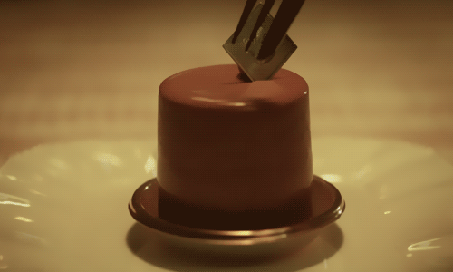
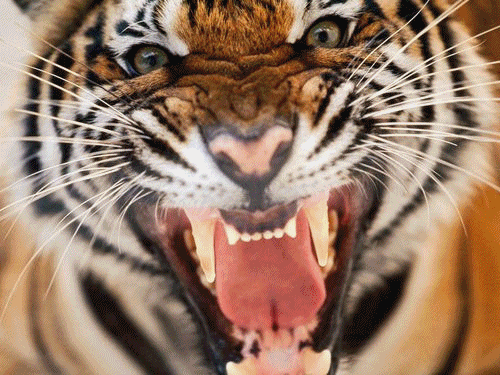

Projects
Personal Proj.
This is an introduction to few of my projects that I created during my tenure at Penn Bootcamp web Development program. I have created Gifs for each section to make the experience feel more interactive and fresher. Under the Projects section, when you click on the view more button it will lead you to a link to view each project. Under the Creativity and Conservation sections you will get to view more photos about my passions for food as well as animal conservation.
About

Creativity
Pasrty Arts
My creative outlet has been in the culinary arts until recently. My favorite medium is chocolate and plated desserts Found how to combine both culinary arts and information systems through molecular gastronomy. I hope to use my knowledge as a web developer to work with food scientist and create exciting new recipes such as pasta made from fruit and flavored smoke.I would also like to work with restaurants and protect their recipes from being hacked.

Conservation